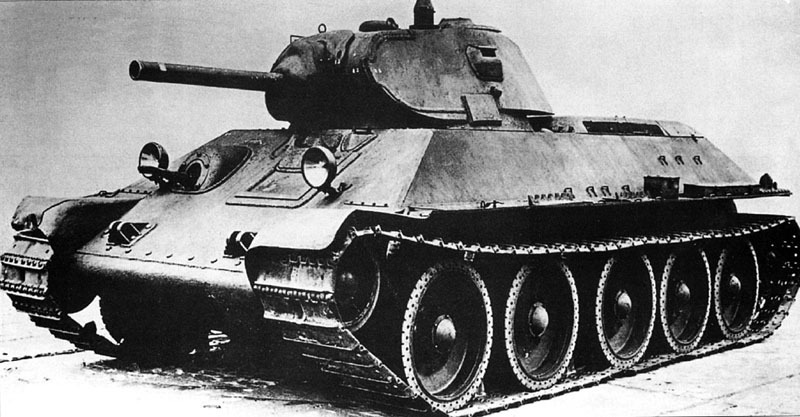

1. Кто был назначен Верховным Главнокомандующим советских войск 8 августа 1941 года?
a) Тимошенко С.К.
b) Сталин И.В.
c) Жуков Г.К.
d) Рокоссовский К. К.
2. В каком ряду названы военачальники, командовавшие фронтами в период Берлинской
операции?
a) Шапошников Б.М., Баграмян И.Х., Мерецков К.А.
b) Василевский А.М., Говоров Л.А., Тимошенко С.К.
c) Жуков Г.К., Рокоссовский К.К., Конев И.С.
d) Будённый С.М., Говоров Л.А., Ерёменко А.И.
3. Когда началась Великая Отечественная война?
a) 1 сентября 1939 года
b) 20 августа 1941 года
c) 22 июня 1941 года
d) 9 мая 1945 года
4. За сколько месяцев Гитлер планировал оккупировать СССР?
a) 2 месяца
b) 5 месяц
c) 9 месяца
d) 14 месяца
5. Какая из названных операций произошла на начальном этапе Великой Отечественной войны?
a) Сражение на Курской дуге
b) Формирование Днепра
c) Снятие блокады Ленинграда
d) Московская битва
6. Как немцы назвали девушек в 46-м Таманском полке?
a) «ведьмы в черном»
b) «ночные ведьмы»
c) «темные люди»
d) «чародейки»
7. Как звали пса, которому присвоили награду «За боевые заслуги»? Он обнаружил более 7
тыс. мин и около 150 снарядов.
a) Дик
b) Бульба
c) Джульбас
d) Мухтар
8. Командиром крупного партизанского соединения в годы Великой отечественной войны был:
a) С.А.Ковпак
b) Я.Ф.Павлов
c) Н.Ф.Гастрелло
d) А.М.Матросов
9. Какая военная операция советских войск явилось началом коренного перелома в ходе Великой Отечественной войны
a) Форсирование Днепра
b) Контрнаступление под Сталинградом
c) Битва на Курской дуге
d) Освобождение Белоруссии
10. Когда было водружено знамя победы над Бранденбургскими воротами?
a) 25 апреля 1945
b) 1 мая 1945
c) 2 мая 1945
d) 9 мая 1945
11. Первая женщина, во время войны посмертно удостоенная Золотой Звезды Героя СССР.
Она была казнена фашистами в деревне Петрищего в 1941 году
a) Литвяк Лидия Владимировна
b) Шипанова Зинаида Александровна
c) Волошина Вера Даниловна
d) Космодемьянская Зоя Анатольевна
12. Лётчик-герой, трижды герой Советского Союза, сбивший наибольшее количество
самолетов противника в годы Великой Отечественной войны
a) Покрышкин Александр Иванович
b) Попков Виталий Иванович
c) Кожедуб Иван Никитович
d) Речкалов Григорий Андреевич
13. Снайпер, прославившийся в дни Сталинградской битвы
a) Зайцев Василий Михайлович
b) Сидоренко Иван Михайлович
c) Ильин Николай Яковлевич
d) Дяченко Федор Трофимович
14. Девушка, медик-герой, Герой Советского Союза, которая пошла на фронт, когда ей было
17 лет
a) Гнаровская Валерия Осиповна
b) Туснолобова-Марченко Зинаида Михайловна
c) Маресева Зинаида Ивановна
d) Самсонова Зинаида Александровна
15. Особо засекреченный спецагент на оккупированных фашистами территориях лично
ликвидировал 11 фашистских главарей и добыл важнейшие разведданные
a) Кудря Иван Данилович
b) Кузнецов Николай Иванович
c) Лягин Виктор Александрович
d) Медведев Дмитрий Николаевич
16. Какой танк изображен на картине?

a) Т-28
b) Т-34
c) Т-50
d) КВ-1
17. Какая награда изображена на картинке?
a) Орден Красного Знамени
b) Орден «Победа»
c) Орден Красной Звезды
d) Медаль «Золотая Звезда»
18. На каком самолете сражался летчик Иван Кожедуб?
a) МиГ-3
b) Як-9
c) Ла-5
d) По-2
19. Кто изображен на картинке?
a) Адольф Гитлер
b) Владимир Ильич Ленин
c) Василий Сталин
d) Иосиф Сталин
20. Что здесь изображено?
a) Флаг РСФСР
b) Герб СССР
c) Знамя Победы
d) Полковое Знамя